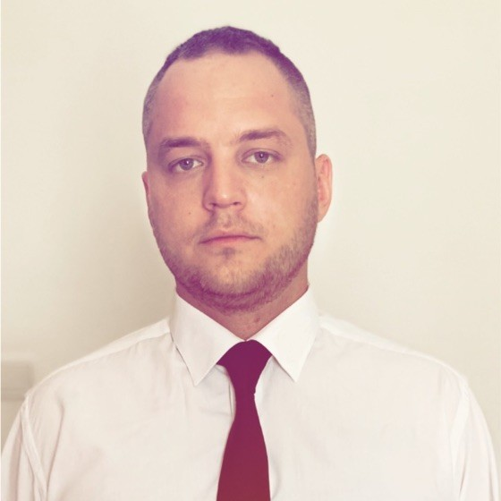

Alex Stepensky

Summary
Versatile QA tester with a passion for ensuring software quality and a proactive approach to learning full-stack web development, combining testing expertise with hands-on programming skills to contribute effectively to the entire software development lifecycle.
Education
- Bachelor's degree, Informatics and Computer Science - National Technical University of Ukraine "Kyiv Polytechnic Institute"
Work Expirience
QA Tester - uTest
October 2021 - June 2022
- Software and hardware testing
- Various testing projects
- Testing plans, details and results
Technical Support Specialist - Rivhit Cloud Accounting System
October 2021 - June 2022
- Costumer support
- Issue investigations
- SQL server instalation and maintanace
QA Engineer - Water.io
July 2022 - Present
- Embedded software testing
- Issue investigations in production
- Customer technical support
- Back end and frontend testing
- Server logs analisys
Skills
- Test design and implementation: ⭐️⭐️⭐️⭐️⭐️
- Web and Mobile testing ⭐️⭐️⭐️⭐️⭐️
- Automation testing ⭐️⭐️⭐️⭐️⭐️
Awards and Certifications
- The Jewish Agency for Israel Volunteer
- Manual QA Testing Course
- Full Stack QA Automation Course
- Full Stack Web Development Course
Other
© Alex Stepensky. All rights reserved.